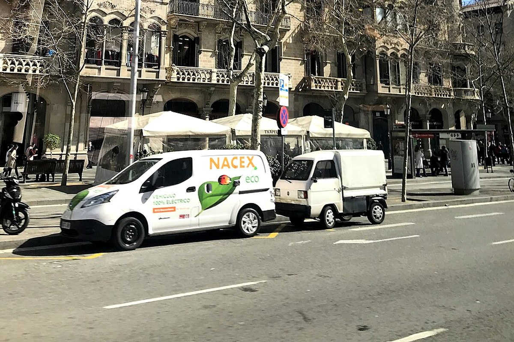

마지막 날 반경을 줄여 분실과 지연 변수를 낮춘다.




마지막 브런치 · 출국
후회 없는 여행을 기준으로 가이드·커플·현지인의 관점을 합의한 일정.
예상 도보51분
대중교통35분
택시·차량0분
일정 지점7곳
반드시 참고: 18:55 CA572 출발. 15:15 전후 공항 도착 목표.
좋아했던 브런치와 짧은 산책으로 끝을 급하게 만들지 않는다.
A1·A2와 출발 터미널, 택스리펀을 전날 확인한다.
숙소
체크아웃·짐 점검
왜 중요한가숙소은(는) 오늘의 흐름에서 다음 장면으로 자연스럽게 이어지는 핵심 지점이다.
볼 포인트체크아웃·짐 점검. 대표 풍경과 공간의 분위기에 집중한다.
실전 팁혼잡하면 핵심을 보고 이동하고, 예약 장소는 15분 일찍 도착한다.
시간 관리표시된 이동시간에 환승·대기 10분을 더한다.
도보Urgell Metro Barcelona → Sant Antoni Barcelona12분 · 경로 ↗
Sant Antoni
마지막 브런치
왜 중요한가Sant Antoni은(는) 오늘의 흐름에서 다음 장면으로 자연스럽게 이어지는 핵심 지점이다.
볼 포인트마지막 브런치. 대표 풍경과 공간의 분위기에 집중한다.
실전 팁혼잡하면 핵심을 보고 이동하고, 예약 장소는 15분 일찍 도착한다.
시간 관리표시된 이동시간에 환승·대기 10분을 더한다.
도보Sant Antoni Barcelona → Placa Universitat Barcelona14분 · 경로 ↗
Plaça Universitat
산책·마지막 구매
왜 중요한가Plaça Universitat은(는) 오늘의 흐름에서 다음 장면으로 자연스럽게 이어지는 핵심 지점이다.
볼 포인트산책·마지막 구매. 대표 풍경과 공간의 분위기에 집중한다.
실전 팁혼잡하면 핵심을 보고 이동하고, 예약 장소는 15분 일찍 도착한다.
시간 관리표시된 이동시간에 환승·대기 10분을 더한다.
도보Placa Universitat Barcelona → Urgell Metro Barcelona13분 · 경로 ↗
숙소
짐 수령
왜 중요한가숙소은(는) 오늘의 흐름에서 다음 장면으로 자연스럽게 이어지는 핵심 지점이다.
볼 포인트짐 수령. 대표 풍경과 공간의 분위기에 집중한다.
실전 팁혼잡하면 핵심을 보고 이동하고, 예약 장소는 15분 일찍 도착한다.
시간 관리표시된 이동시간에 환승·대기 10분을 더한다.
도보Urgell Metro Barcelona → Aerobus Placa Universitat10분 · 경로 ↗
Aerobús 정류장
공항버스
왜 중요한가Aerobús 정류장은(는) 오늘의 흐름에서 다음 장면으로 자연스럽게 이어지는 핵심 지점이다.
볼 포인트공항버스. 대표 풍경과 공간의 분위기에 집중한다.
실전 팁혼잡하면 핵심을 보고 이동하고, 예약 장소는 15분 일찍 도착한다.
시간 관리표시된 이동시간에 환승·대기 10분을 더한다.
AerobúsAerobus Placa Universitat → Barcelona El Prat Airport35분 · 경로 ↗
Barcelona Airport
체크인·택스리펀
왜 중요한가Barcelona Airport은(는) 오늘의 흐름에서 다음 장면으로 자연스럽게 이어지는 핵심 지점이다.
볼 포인트체크인·택스리펀. 대표 풍경과 공간의 분위기에 집중한다.
실전 팁혼잡하면 핵심을 보고 이동하고, 예약 장소는 15분 일찍 도착한다.
시간 관리표시된 이동시간에 환승·대기 10분을 더한다.
도보Barcelona El Prat Airport → Barcelona El Prat Airport10분 · 경로 ↗
CA572 Departure
베이징행
왜 중요한가CA572 Departure은(는) 오늘의 흐름에서 다음 장면으로 자연스럽게 이어지는 핵심 지점이다.
볼 포인트베이징행. 대표 풍경과 공간의 분위기에 집중한다.
실전 팁혼잡하면 핵심을 보고 이동하고, 예약 장소는 15분 일찍 도착한다.
시간 관리표시된 이동시간에 환승·대기 10분을 더한다.
오늘의 후회 방지 가이드
수하물이 서울까지 연결되는지 확인하고 베이징 환승 탑승권과 터미널을 오프라인 저장한다.